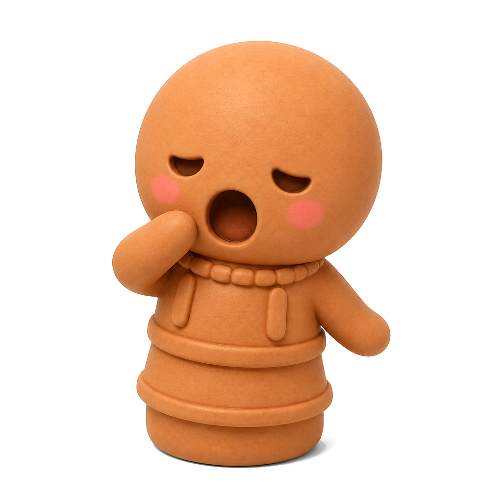
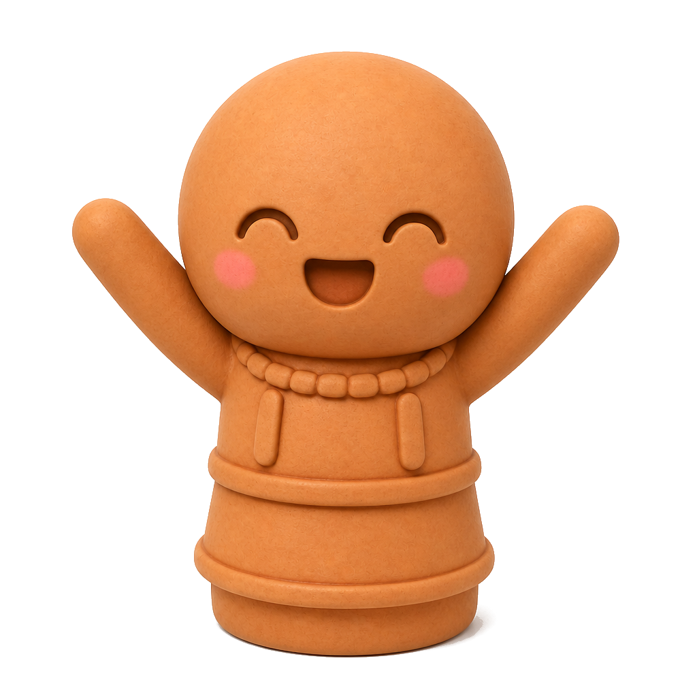
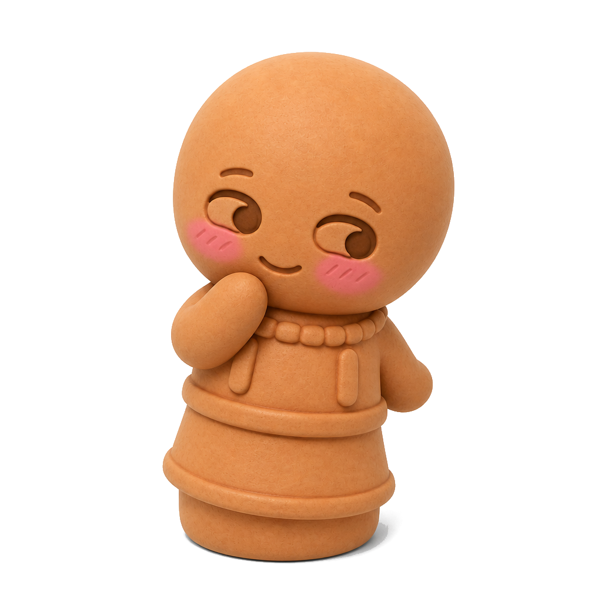
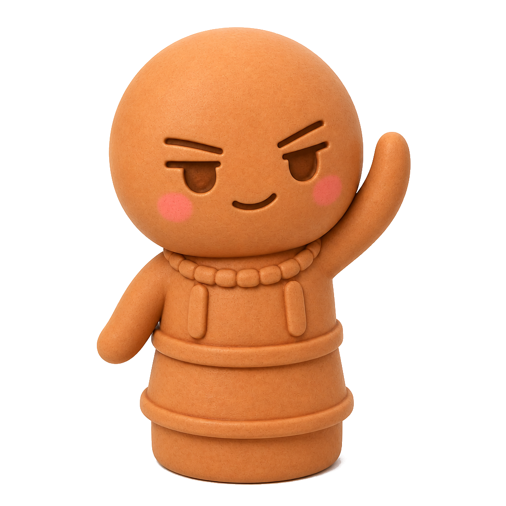
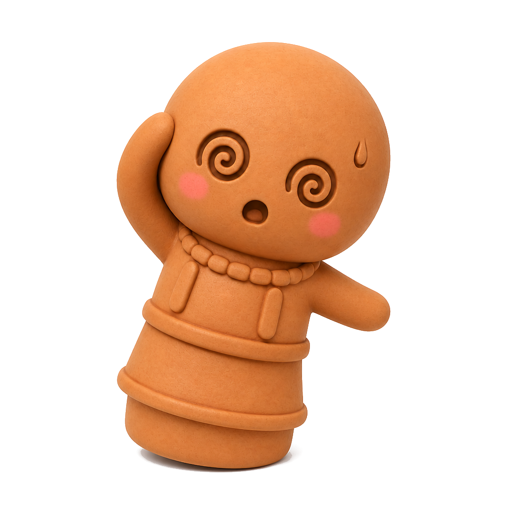
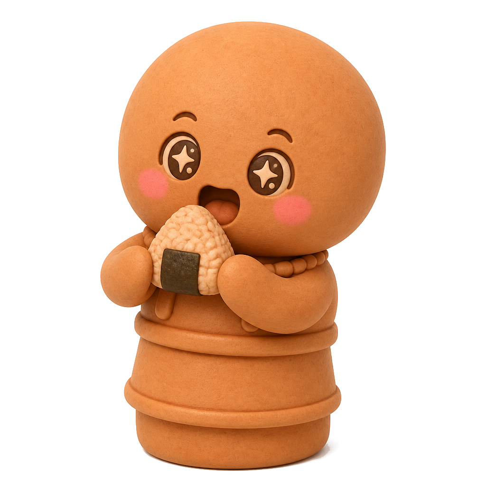
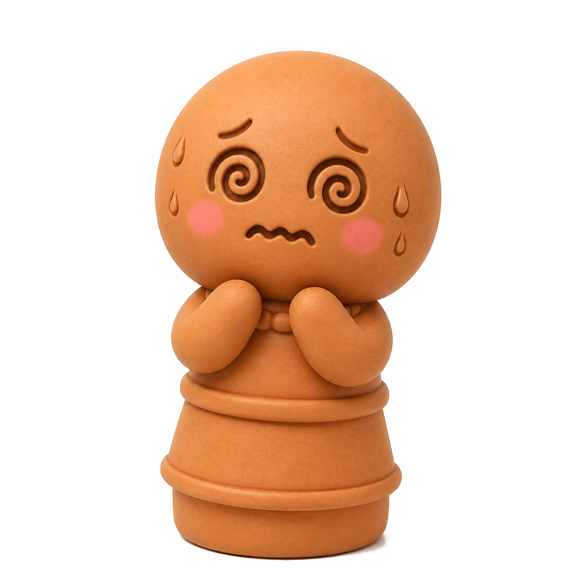
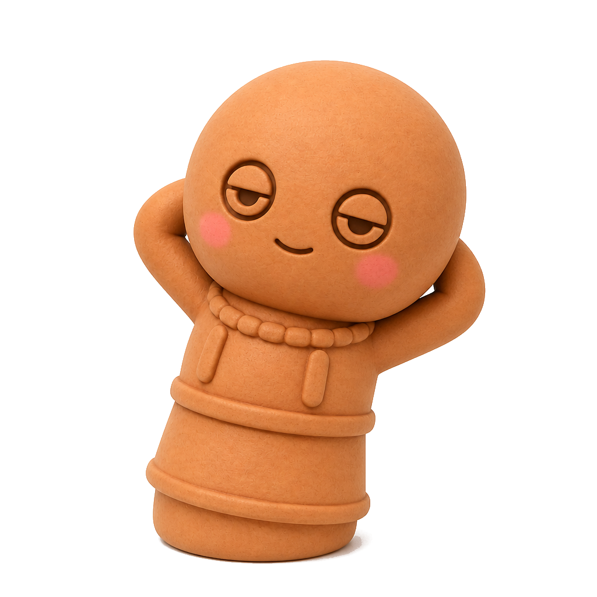
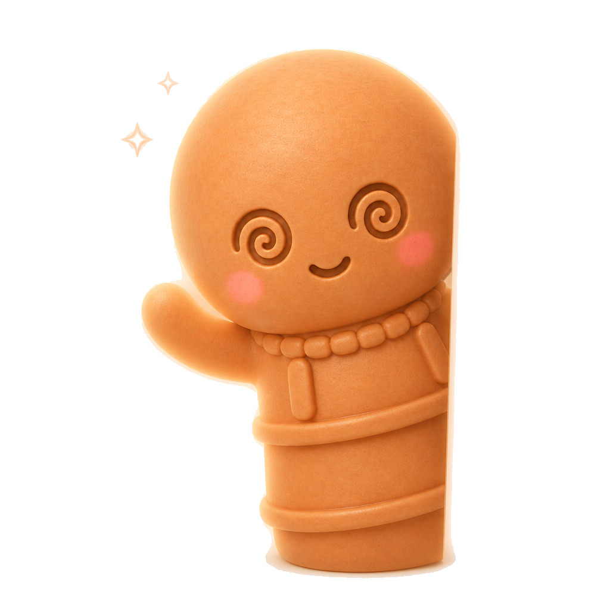
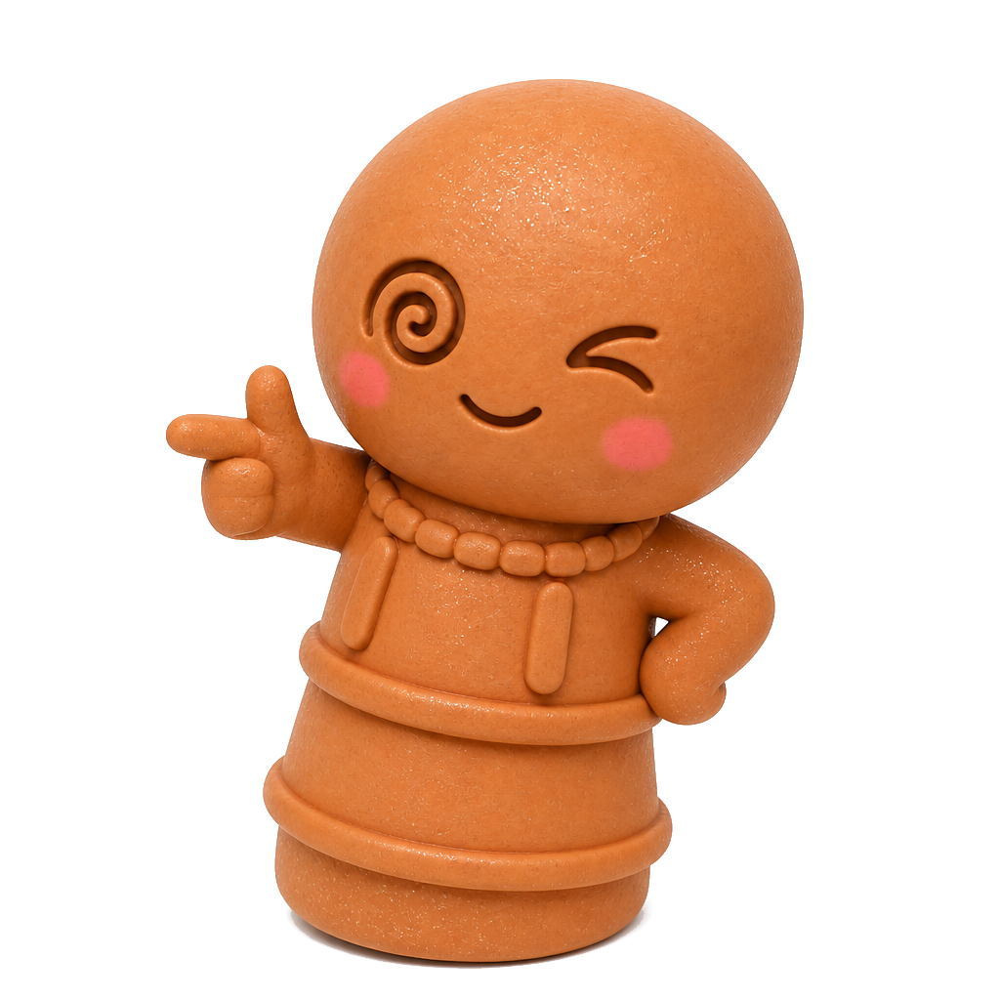

ねむけの直立
起きてすぐ、スマホより先に空を見る。右手を心のなかで上げて、「きょうも立つぞ」とひと言。
教え
むずかしいお経はありません。
ちょっと姿勢を正すだけで、心の天気が変わります。
日課
道具はいりません。
息を三回ととのえるだけで、古墳の風が部屋に入ります。
起きてすぐ、スマホより先に空を見る。右手を心のなかで上げて、「きょうも立つぞ」とひと言。
だれかとぶつかっても、すぐ言い返さない。はにわみたいに、三秒だけ立つ。だいたい、それで雲が流れる。
友だちがぼやいたら、正解を言わなくていい。目をふたつ開けて、口をひとつ静かにする。
きょう立てた自分を、すこしほめる。へんな一日も、焼きものの味のうち。
記録
12840
信徒数
318
いま心で立ってる人
0秒
いまここにいる秒数
儀式
タップするたび診断します。
たまに直立してない日もあります。
それも、はにわ。
図鑑
ぽんこつ八人衆。みんなちがって、みんな土。

あくびも立派な直立

よろこびは両手で足りない

正面は苦手。斜めが得意

右手を上げると、なんとなく強い

考えが回りすぎて、自分が回る

ごはんまで、心がふらふら直立

「もしも」のコレクション係

急がない。それが最高のわざ

いるのに、いない。夕方だけ出勤

たまに光る。理由は非公開
夜勤の丘の番人。昼寝は権利
回し続けた人だけが、たまに会える
診断
まじめに答えても、いいかげんに答えても、だいたい正しい。
丘の住民票を発行します。
入信
てつづきは架空です。
ボタンを押せば、心のなかで小さなはにわが一歩、前に出ます。